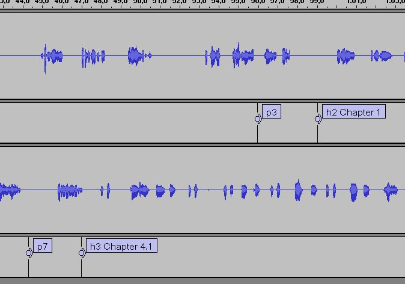
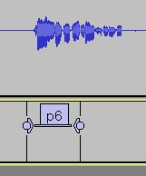
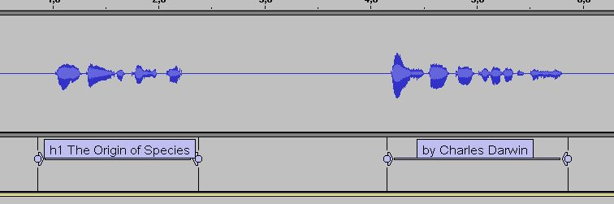

This script creates a DAISY/NISO NCX (audio) only digital talking book from an Audacity project. By using markers in the Audacity project in a predefined way in the recorded audio, the resulting DTB can contain headings and pagenumbers .
Note: when you save the Audacity project, you must choose the option to import the audio files into the project.
A special "set-the-duration" technique (described below) also allows the pagenumbers to become skippable in the output DTB.
This script has been tested against Audacity version 1.3.7. Earlier versions are not supported.
An Audacity project file (*.aup), following the DTB-enabling conventions as described in the section below.
Cardinal Rule One For each wave track in Audacity, there must be a label track immediately below.
You can record your project using one wavetrack only, or you can use several wavetracks, as long as all wavetracks have a label track immediately below. The image below shows an Audicity DTB project which uses two Wave tracks; each wave track has a label track immediately below.
For each heading you want create, drop a Marker at the appropriate time position in the Label track below the concerned Audio track. The markers value must begin with h1, h2, h3, h4, h5, or h6 for the marker to be detected as a heading.
The text following in the marker value will become the heading text. For example, a marker value of h2 Chapter 3 Galapagos will create a level 2 heading with the title "Chapter 3 Galapagos".
It is important to remember that heading must be in numbered order. That is an h2 must follow an h1, another h2 or an h3.
For each page you want create, drop a Marker at the appropriate time position in the Label track below the concerned Audio track. The markers value must begin with p for the marker to be detected as a pagenumber.
For example, the marker value "p56" will create a normal pagenumber with the value "56".
You can also create special and front pages; the marker value pIV will create a front page with the roman numeral four. The marker value pA23 will create a page-special with the value A23.
You can also have pagenumbers be autonumbered during the Pipeline DTB generation phase.
Simply create a marker with the value p and then activate the autonumbering feature of this script in the Pipeline user interface. Note - if you activate page renumbering while saving as DAISY, all normal pages will be renumbered, even those that were actually given a value in the Marker value field.
Any marker added (with or without duration) that does not use the heading or page tokens as described above will be regarded as general DAISY phrases.
By creating markers that have a duration (i.e. a start and an end point), you will provide for a maximum quality output DTB. Adopt this technique in the following way:
The picture below shows a page announcment whose start and end point has been marked using a Marker with duration.
The conversion process assumes that the reading of the documents title is the first marked phrase of the recording, and that the documents author is the second marked phrase.
You would typically mark the first phrase as also being a heading one, and the second as being a general phrase.
The audacity metadata editor will capture the following fields and bring them into the DTB:
YYYY-MM-DD in this field.If you dont provide the metadata required for a valid DTB, dummy values will be inserted during the Save-as-DAISY process. Dont forget to fix these (in the .opf) before finalizing the project!
creation/advanced directory)Certain sample rates in the input audio files can cause the output audio to sound like "static". Until this issue is fixed, make sure to use "standard" sample rates (such as 44.1k) and bit depths (such as 16 bit) in the input audio files. You can use Audacity to easily do this conversion.
Also, to be on the safe side, it is recommended to make a test Save-as-DAISY run early on in the project (before doing any extensive editing) and assure that the output audio files sound ok.